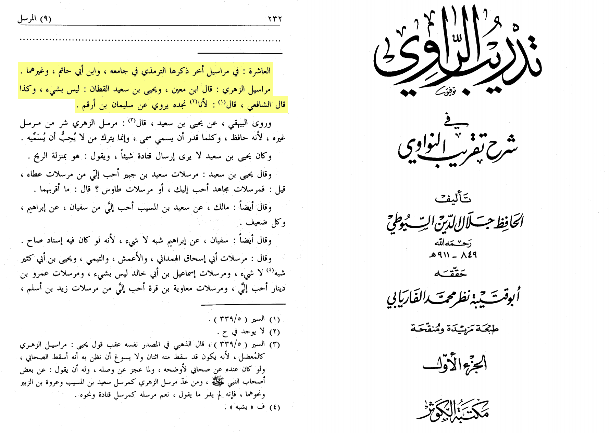
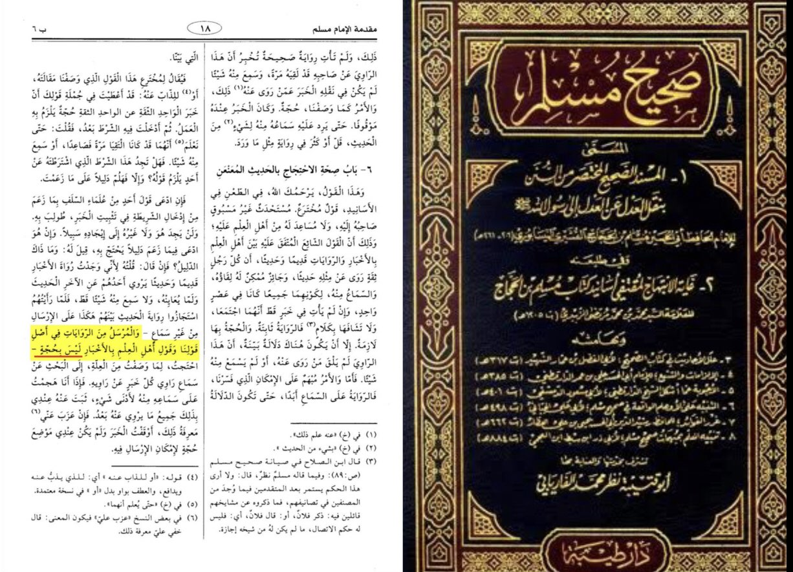
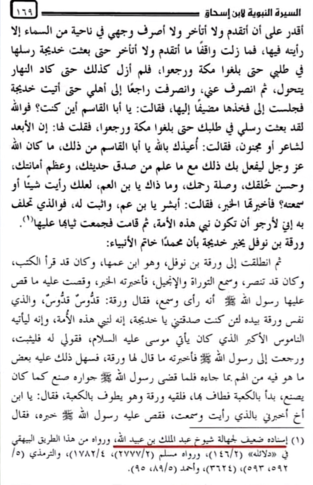

This narration found in al-Bukhari is a second part it says fima balaghana from what we have heard from al-zuhri
who is a tabi’
Meaning he didn’t live in the lifetime of the prophet so his hadith is mursal meaning he gives information from
which he has not seen what is the ruling on that
translation: “Ibn ma’in said: it is nothing and so said Al-shāfī’ī ibn sa’d said the mursal of al-zuhri is worse
of mursal of others”
-Source: Tadrib al-rawy fi sharh taqrib al-nawawi volume 1 page number 232

Note, al-Imām Muslim says in Sahīh Muslim,
”… And the principle of our saying, and the saying of Ahl al-‘Ilm is Akhbār that are Mursal
are not a Hujjah, meaning they are nothing.”

There is another isnad mentioned in sirah ibn ishaq however it has majhools in it that is weak too
The taqhueeq says the report chain is weak because the sheyookh of abdul malik bin Abdullah are unknown
